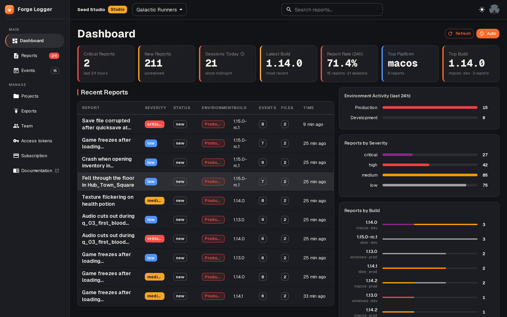

Independent game studio · Czechia
Games and tools, forged small.
StoneForge Labs makes small, finished games — and the playtesting tools we wished existed while making them.
Games
short by design — they end, on purpose
Marble Mill
Q4 2026An idle game where every coin is a real collision. ~3 hours to a real ending — then an endless sandbox.
Cozy
Idler
Physics
Short
Ballfall
no art yet — on purpose
Ballfall
In the forgeMarble Mill's mill builds itself. In Ballfall you build your own — marble by marble.
Tools
built for our playtests, free for yoursForge Logger
Your playtesters press one key, type what broke, and you get a structured bug report — with a screenshot and the exact scene, build, and environment it happened in.
- Free, MIT-licensed Godot 4 plugin
- AI summaries, repro steps, dedupe
- One-click export to GitHub, Jira, GitLab

No dark patterns. In games or tools.
No microtransactions. No “wait 4 hours or pay”. No ads. Ever. Our games end when they're done, and our tools are yours to self-host.